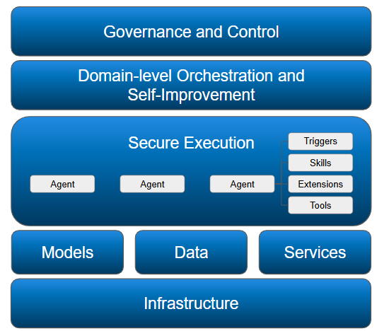

The Platform Challenge: Managing Heterogeneous, Hybrid Agentic Workforces
In our first article we explored what agentic workforces are and why enterprises need to start planning now. But there's a critical challenge: enterprises aren't building a single, unified agent system. They're creating something far more complex: a heterogeneous, hybrid agentic workforce that spans frameworks, teams, and deployment locations.
This reality creates challenges that individual teams can't solve alone.
The Heterogeneity Challenge: Many Frameworks, One Enterprise
The Reality of Enterprise Agent Adoption
Visit any large enterprise and you'll find a diverse landscape:
- Engineering builds applications, with a mixture of Claude Code, Cursor, OpenCode, etc. and even more models
- Finance deploys LangChain agents for fraud detection and risk assessment
- Customer Service pilots conversational agents using multiple frameworks
- Operations runs Claude Code based scripts
- Employees have started running personal assistants or their own preferred AI tools (often against policy)
This diversity isn't a mistake, it's on purpose!
We're still in early, creative phase. Different tasks require different capabilities:
- Some agents excel at reasoning
- Others at code generation
- Still others at data analysis
- And new frameworks emerge constantly
No single agent framework excels at everything. Teams choose the right tool for the job.
The Problem This Creates
When every team picks their own framework, enterprises face fragmentation:
- No unified visibility: Can't see what all agents are doing
- Inconsistent governance: Each team implements (or ignores) security differently
- Duplicated effort: Every team reinvents logging, authentication, memory
- No shared learning: Agents can't leverage discoveries from other agents
- Integration nightmares: Connecting agents requires custom glue code
Without platform infrastructure, heterogeneity becomes chaos.
The Hybrid Deployment Challenge: Agents Everywhere
Where Agents Actually Run
Agents don't live in one place. The modern enterprise requires hybrid deployment:
Developer Laptops: Where agents are built and tested
- Engineers experimenting with new capabilities
- Product managers prototyping use cases
- Managers making status reports combining different sources
Public/Private Cloud/On-Premises: Where company workloads run
- Employees interacting with company systems
- Financial services agents handling customer data
- Legal agents processing privileged documents
Edge Locations: Where real-time intelligence is needed
- Factory floor agents monitoring equipment
- Retail agents optimizing inventory
- IoT agents responding to sensor data
Why On-Premises is Resurging
A surprising trend: 86% of CIOs are planning on-premise workload migration for AI applications (DataBank - The Reality of Cloud Repatriation).
The drivers are compelling:
Legal Compliance: Regulated industries require data sovereignty. Customer data must stay within specific jurisdictions.
Intellectual Property Protection: Agent traces using cloud tools reveal proprietary information to external parties.
Cost Economics: On-premise AI achieves ROI breakeven in months, not years, especially for high-utilization workloads.
Geopolitical Risk: Reduce dependence on foreign cloud providers in an uncertain world.
The platform must support agents wherever they need to run, not force them into a single deployment model.
The OpenClaw Lesson
OpenClaw showed us there is a demand for more autonomous agents performing knowlegde work. The rapid adoption of OpenClaw however also showed the significant security risks that are introduced by making those agents more powerful. Many users are clearly eager to try and consume some of these advanced capabilities, but enterprises need to combine this innovation with governance.
The Historical Pattern: Every Platform Shift Needs a Control Plane
This challenge isn't new. We've seen it before, for VMs, containers and microservices. The pattern repeats:
Phase 1 - Innovation: New technology emerges, early adopters experiment
Phase 2 - Sprawl: Teams adopt the technology in fragmented ways
Phase 3 - Platform: Control plane emerges to provide governance and consistency
Phase 4 - Enterprise Scale: Production deployment becomes possible
Agentic AI is entering Phase 3—the platform phase.
Organizations learned with containers: you can't scale without orchestration. The same lesson applies to agents. The platform doesn't prevent teams from using different containers (or agents). It provides the layer that makes diverse components work together.
What the Platform Must Solve
To manage heterogeneous, hybrid agentic workforces, platforms must address:
1. Unified Visibility
The Need: See all agents across all frameworks and locations
Without this, executives can't answer basic questions:
- What are our agents doing?
- How much are we spending?
- Which agents deliver ROI?
- Where are the failures?
2. Consistent Governance
The Need: Same policies regardless of framework or location
Whether an agent runs on a laptop or in a data center, using Claude Code or LangChain, governance must be consistent:
- Access control policies apply universally
- Approval workflows work the same way
- Audit logs follow the same format
3. Shared Services
The Need: Common capabilities agents can leverage
Instead of every team building:
- Authentication and authorization
- Logging and monitoring
- Memory and state management
- Tool/skill libraries
The platform provides these, and agents consume them. No need for each agent to have their own memory or routing layer.
4. Enterprise-Grade Security
The Need: Secure agents by default
The platform must enforce:
- Sandboxed execution environments
- Deny-by-default permissions
- Fine-grained access control
- Audit of all access attempts
5. Hybrid Deployment Support
The Need: Run agents anywhere, manage everywhere
The platform must work whether agents run:
- On developer laptops
- In private clouds
- In public clouds
- At the edge
Same management, different locations. Enable teams to start using agents where it makes sense.
The Platform Imperative
The heterogeneous, hybrid reality of enterprise agentic workforces creates challenges that individual teams cannot solve:
- Heterogeneous agents require unified monitoring, orchestration and learning
- Distributed deployments require consistent management
- Security risks require platform-level controls
- Compliance demands require systematic audit
- Cost pressures require optimization insights

The platform layer makes heterogeneous, hybrid agentic workforces manageable.